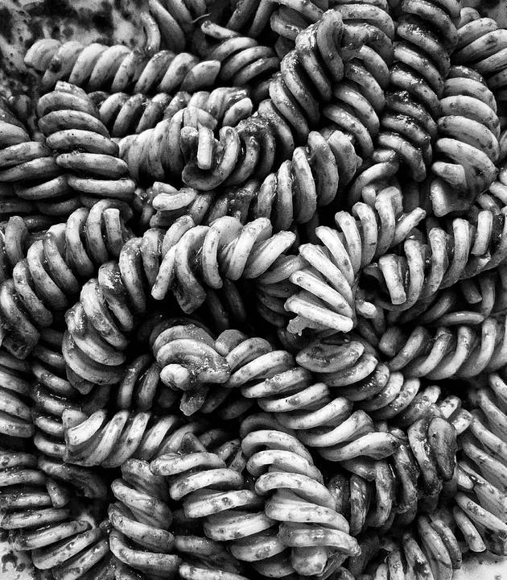
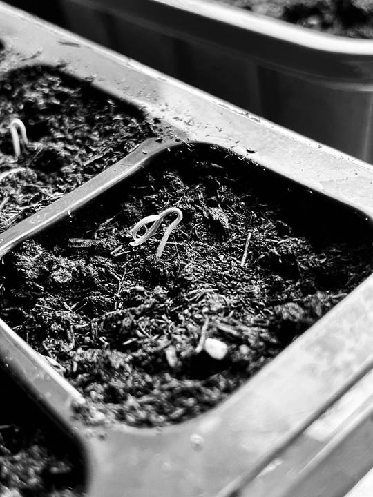
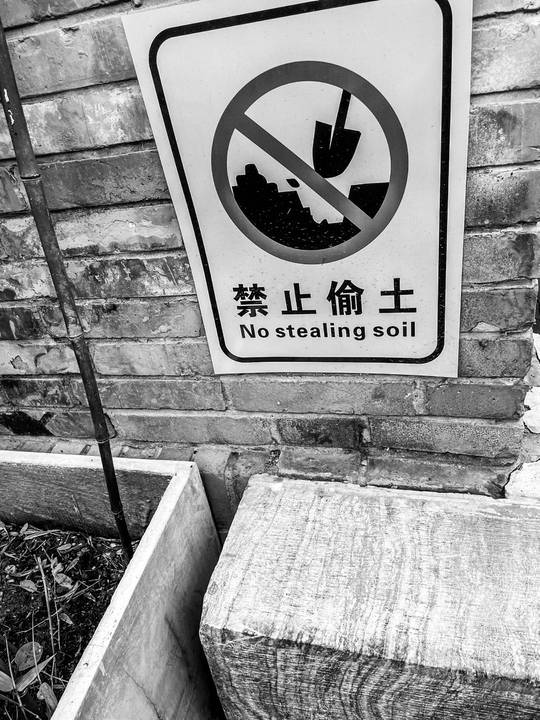
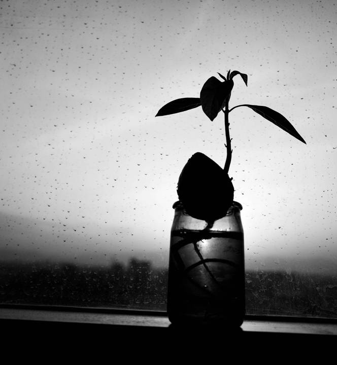
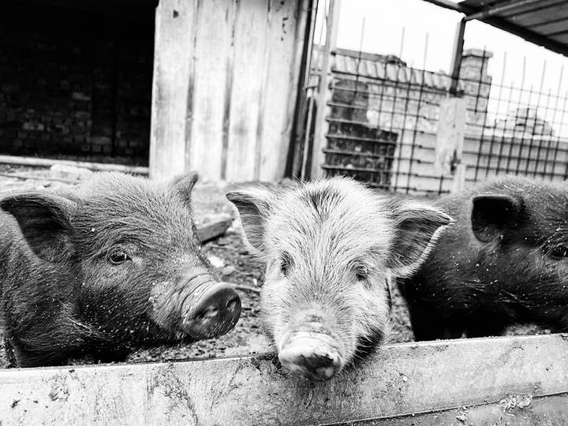
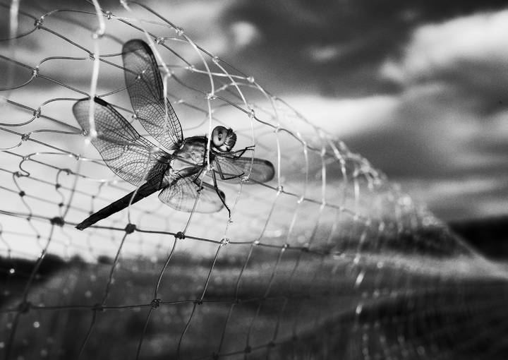

A Gardener’s Notes。
Getting to know the soil
Growing things begins with a packet of seeds—and soon leads to questions about soil, insects and compost. These photographs follow the small discoveries, surprises and setbacks of tending a garden.
Coffee grounds, eggshells, a little patience.
I started by trying different seeds. The results were not always what I had hoped for, but pests and plant diseases gave me more to investigate. What do earthworms eat? What makes good soil?
The photographs grew out of paying attention, day after day. Kitchen scraps turn into compost; seedlings take root. Gardening offers a practical way to feel more connected to the ground beneath us.






From the first issue of our magazine, Hudu (忽独). Photography and writing are credited above. Handwriting and annotations in the original artwork have been left as they are.
Pause. Take another look.
Explore more art projects